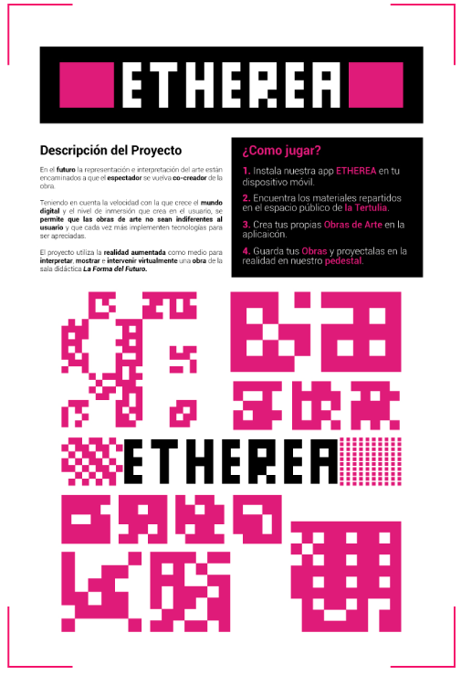

In the future the representation and interpretation of art are aimed at the spectator becoming co-creator of the work. Taking into account the speed with which the digital world grows and the level of immersion that creates in the user, it is allowed that works of art are not indifferent to the user and that more and more implement technologies to be appreciated. The project uses augmented reality as a means to interpret, display and intervene virtually a work of the didactic room The Form of the Future in the Museum La Tertulia of the city of Cali, Colombia.
Intervention at the La Tertulia Museum
Six posters with 6 different targets were placed in several places of the museum. The user moved from one point to another with his cell phone until he reached the last station in which he had to build his own digital work in augmented reality.
Posters & Targets Design
Cube's Texture
Each target or station allowed the user to acquire a digital cube. Each cube had a different texture so the person could have a variety of elements in order to combined them in a millions different ways and, by doing so, each user could have an unique digital sculpture.